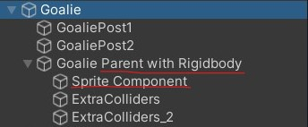

Sprites and Video players
📦 Unity packages from today's class:
- Class Demo: Sprites (continuation from demo on statics, scenes, sounds, and vfx) and Video Player
📚 Other relevant resources to today's topic:
Using the Sprite Component on a 3D Moving Rigidbody
If you're applying a sprite to a moving 3D object (let's say a player gameobject), I recommend attaching the sprite component inside a separate gameobject, then parent it to your player GameObject that has your Rigidbody, collider components, and player movement scripts.
In my package example, here is how my enemy object is arranged in my scene hierarchy:
- Parent Gameobject with Rigidbody, colliders, and physics-based movement script.
- Child Gameobject with Sprite component and sprite-related scripts (eg. rotating towards player camera, sprite switcher)

Change Sprite using Scripts
public Sprite sprIdle, sprAction; // attach your sprite textures in the inspector
SpriteRenderer sprRend; // attach this script to the same object containing your sprite renderer
void Start()
{
sprRend = GetComponent<SpriteRenderer>();
ChangeSprite(sprIdle);
}
//you could also call this function in a public UnityEvent
//and attach the Sprite as an argument in the inspector.
public void ChangeSprite(Sprite toThisSprite)
{
sprRend.sprite = toThisSprite;
}
//you could also consider using a coroutine function
//to reset the sprite back to its idle state after a set duration
Rotate Sprite Towards Camera
This method uses the Vector3.RotateTowards() function to rotate sprites towards the camera.
public class RotateTowardsPlayer : MonoBehaviour
{
public float rotationSpeed;
private void LateUpdate()
{
//Camera.main is a method for getting your camera that's tagged "MainCamera"
//typically only a single MainCamera exists in your scene
//make sure to tag your player camera as MainCamera.
//first get directional vector3 from this object to camera position.
Vector3 targetDirection = Camera.main.transform.position - transform.position;
float step = rotationSpeed * Time.deltaTime;
//Rotate the forward vector towards the target direction by one step
Vector3 newDirection = Vector3.RotateTowards(transform.forward, targetDirection, step, 0.0f);
//rotate our object along this new direction.
//here, i'm setting the y-vector as 0 so it rotates along the world Y-axis.
transform.rotation = Quaternion.LookRotation(new Vector3(newDirection.x,0,newDirection.z));
}
}
Video Player Component
Read the documentation for the video player component on Unity's Manual.
Importing a Video into your Assets folder.
Check out the following documentation on Unity's Manual:
- video file compatibilities across different target platforms;
- video transparency support, if you're using videos with alpha channel renders.
Select the video clip in your assets folder. Make sure to tick the checkbox for "Transcode" in the Inspector panel, and then hit Apply.

The simplest way of attaching a video onto a mesh object is to add a video player component, then attach the transcoded video clip asset inside the video player as a "Video Clip".
The default render mode should be set to "Material Override", which replaces the current material base texture with the video.

Video Player Properties

Here are some notable properties to take note of when setting up your video player:
- Source: Defaults to "Video Clip." You may change this to URL if you want to paste an online video link -- note that you may need Wi-fi access during runtime for your video to play.
- Play On Awake: Automatically plays the video at the start of the scene. To manually trigger the video playback, call the Play() command from the Video Player class in a C# script.
- Loop: loops the video playback.
- Playback speed: Defaults at 1. Change this number if you want the video to play faster (higher float) or slower (lower float).
- Render Mode: Defaults to "Material Override". More info about using other render modes are listed in the sections below.
- Alpha: Defaults to 1. Transparency level of the video.
- Audio Output Mode: Defaults to "Audio Source". You may set a different Audio Source, or set the Audio Output Mode to "None" if you want the video to play without any audio tracks.
Video to Render Texture workflow
If you want to further customise how the video renders onto a material, you may consider setting the video player output to a render texture instead.
The following demonstrates the workflow of this method:
| Video Player | → | Render Texture | → | Texture Map on Material |
|---|---|---|---|---|
| Takes a video clip and renders its playback according to the selected render mode, which in this case would be "Render Texture". | An asset that receives the video player's output as a texture | Render texture can be plugged into a material's base colour, normal, emission, etc. |
STEP BY STEP INSTRUCTIONS:
- Create a video player component in an empty GameObject in your scene. You will only need one video player component per video clip in your scene, i.e. you don't need a video player component on every mesh object that's rendering the video.
Set the render mode to "Render Texture."
- In your assets folder, create a Render Texture asset. You may set the size of the texture to match your video clip's resolution or aspect ratio.

- Attach this render texture to the Target Texture property in the video player component.

- Create a new Material asset, then attach your render texture asset as a texture for the material's base colour property. This workflow also allows you the option to plug in the video texture to other material properties besides the base colour.

Video to Camera Plane
Setting the video player's render mode to "Camera Far Plane" allows you to project the video along the far plane of the selected camera view. This could be an option for playing a video in the camera's background.

Setting the video player's render mode to "Camera Near Plane" allows you to project the video along the nearest plane of the selected camera view. This could be an option for playing a video over other objects in the scene.

Some course reminders
- Project 2 is due Thursday!